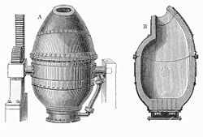
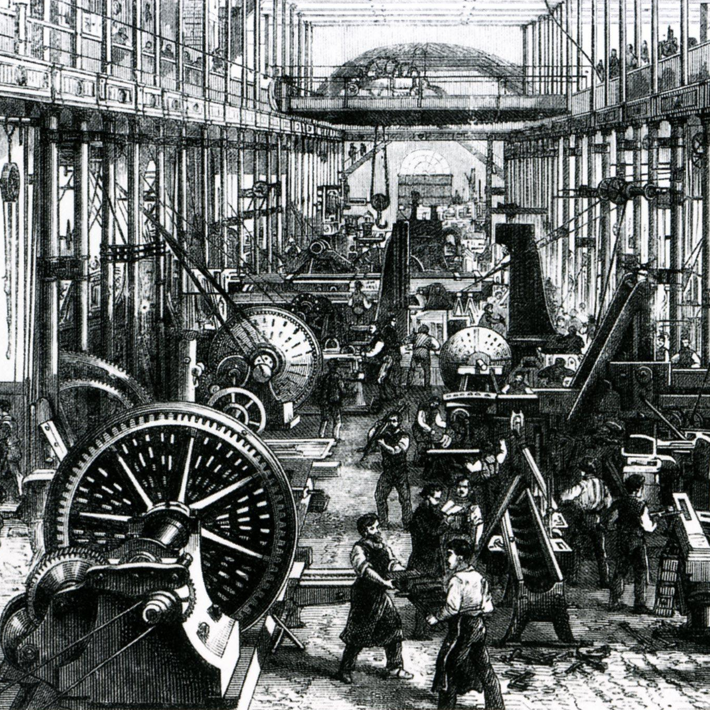

Bevezetés
Az ipari forradalom az emberiség történetének egyik legnagyobb áttörése volt, és forradalmi változást hozott az ipar és a gazdaság területén. Az ipari forradalom az 1760-as években kezdődött Angliában, majd a 19. században Európa és Észak-Amerika széles területeire terjedt.
Az ipari forradalom számos technológiai fejlesztést hozott magával, mint például a gőzgépek, az acélgyártás és az automata gyártósorok, amelyek nagyban növelték a termelékenységet és csökkentették a termelési költségeket.
A hatások
Az ipari forradalom hatalmas hatást gyakorolt az emberi élet minden területére. Az ipari forradalom átalakította a gazdaságot, az életmódot, a társadalmat és a munkakörülményeket.
Az ipari forradalom előtt a legtöbb ember agráripari tevékenységet végzett, és az élet nehéz volt. Az ipari forradalom azonban lehetővé tette az emberek számára, hogy nagyvárosokban éljenek és dolgozzanak, és nagyobb anyagi javakat szerezzenek. Az ipari forradalom azonban sok munkásságot is szenvedést és rossz munkakörülményeket eredményezett, különösen a textil- és bányászati iparban.